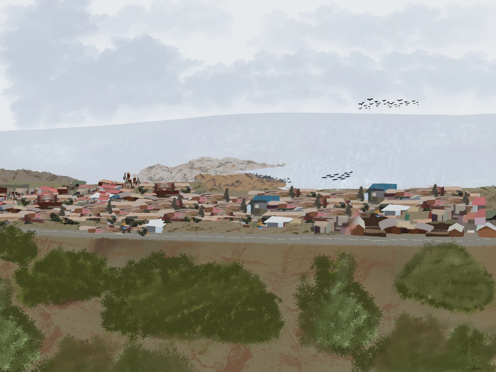
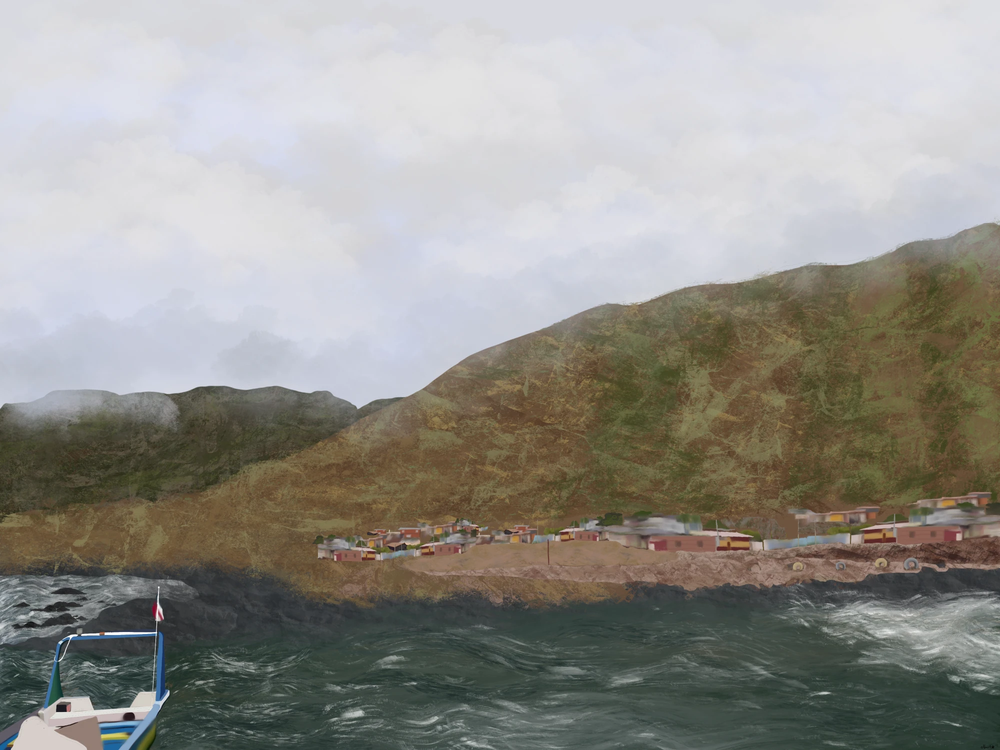

Recurso Pedagógico Digital · 1° a 6° básico
Lugares significativos del pueblo chango · Comuna de Taltal, Región de Antofagasta
Portada provisoria · la imagen definitiva de la portada será entregada más adelante.
Lugares significativos del pueblo chango · Comuna de Taltal, Región de Antofagasta
Toca un símbolo para mostrarlo u ocultarlo en el mapa.


Toca los lugares que brillan para descubrirlos.
Mapa a escala aproximada, elaborado a partir de los mapas «Sitios de significación cultural» (Recorrido Orilla y Recorrido Mar) de la Comunidad y Corporación Indígena Loreto · los lugares atenuados aún no tienen ficha